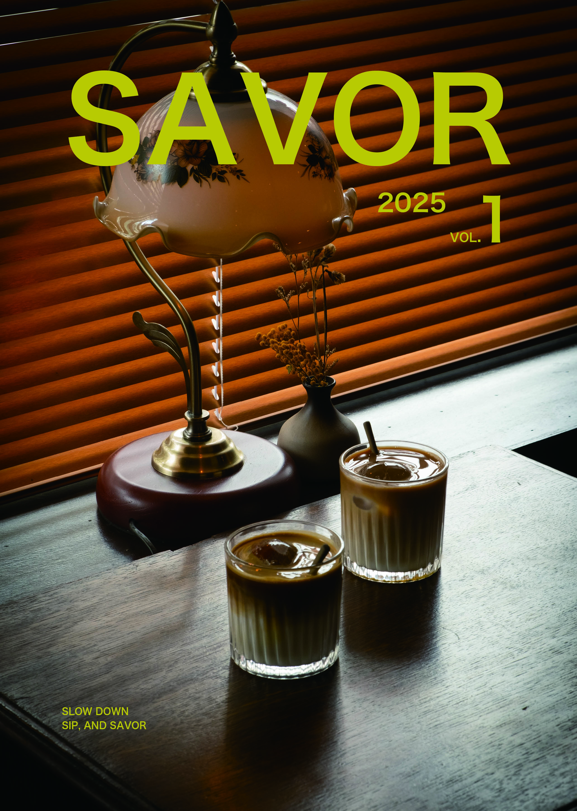

01 / EDITORIAL & BOOK BINDING
SAVOR2025.
《SAVOR》是一冊以咖啡廳為主題的攝影書。從窗邊斜落的光、杯中冰塊的聲音，到桌面留下的食物痕跡，我親自拍攝空間裡不被催促的瞬間，將它們編排成一段可以慢慢翻閱的午後。

SLOW
DOWN.
以咖啡廳裡的暖木色、深墨綠與螢光黃為視覺基調，將環境的安靜感延伸到封面、內頁與閱讀節奏。版面透過跨頁攝影、細線、頁碼與大面積留白，讓每個畫面都像在桌邊停留片刻。
這本書不只是記錄一間咖啡廳，而是將「慢下來，好好品味」轉換成可以被帶走、反覆翻閱的紙本體驗。